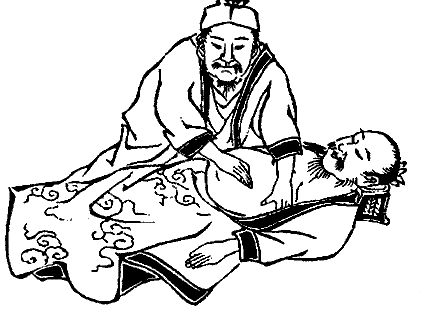
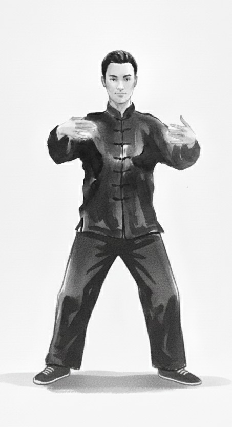

L'Art de l'Équilibre Intérieur
Praticien en Chi Nei Tsang et enseignant de Qi Gong, je vous accompagne dans la traversée des épreuves de la vie par l'écoute du ventre et l'alchimie taoïste.

Praticien en Chi Nei Tsang et enseignant de Qi Gong, je vous accompagne dans la traversée des épreuves de la vie par l'écoute du ventre et l'alchimie taoïste.
Provenant de l’ancienne tradition Taoïste, le Chi Nei Tsang applique le Chi Kung à une écoute du ventre. En alliant la respiration et un toucher en douceur, au contact des organes internes, cette technique permet de connecter et de réintégrer toutes les différentes parties de soi-même.
Grâce à l’intelligence du système digestif, nos charges émotionnelles, source de douleurs et de problèmes de santé sont assimilées et transformées en énergie utile.

Mes cours de Qi Gong sont une invitation à explorer l'alchimie interne. Par le mouvement, la respiration et l'intention, nous apprenons à transformer nos tensions et émotions en énergie positive.

7 rue des Templiers, 85450 PUYRAVAULT
Séances au cabinet ou à domicile.
06 10 58 31 75 pm82@outlook.fr